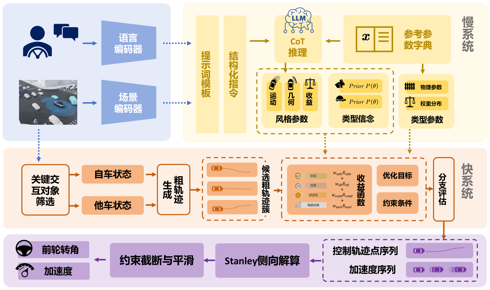

Understand the interaction
Select relevant surrounding vehicles and represent the local driving context together with passenger instructions.
Interactive autonomous driving
LLMGame: Intent-Conditioned Fast–Slow Decision-Making
Connecting language-based reasoning with Bayesian–Stackelberg games to navigate changing preferences and human driving intentions.
The idea
Safe interaction depends on more than tracking motion. An autonomous vehicle must interpret whether another driver will yield or compete—and adapt when its passenger’s priorities change. LLMGame turns these high-level interpretations into explicit parameters for a fast game-theoretic decision loop.
01 / Method
Slow reasoning supplies context.
Fast optimization turns it into motion.

Select relevant surrounding vehicles and represent the local driving context together with passenger instructions.
The slow reasoning loop updates beliefs over Yield, Normal, and Force behaviors, while translating preferences into safety, efficiency, and comfort weights.
The fast Bayesian–Stackelberg game selects maneuvers and acceleration. A trajectory controller executes the resulting plan as reasoning updates asynchronously.
02 / Simulation
Full original recordings.
Select a scenario to explore.
Observe the vehicle’s motion and surrounding traffic in the highway environment.
03 / Quantitative evidence
Dense two-lane cut-in ablation
50 paired, fixed-seed runs per variant
Successful merges Higher is better
Same scenarios, controller, rewards, and action set. The ablation replaces inferred driver-type beliefs with a uniform distribution.
| Measure | LLMGame | Uniform |
|---|---|---|
| Collisions | 0 | 13 |
| Mean merge time | 13.80 s | 19.43 s |
| Mean speed | 6.97 m/s | 6.99 m/s |
increase in merge success
with inferred intent beliefs
Source: manuscript, Table I. Seeds 9950–9999; failed trials contribute the 40 s horizon to mean merge time. These results describe the specified simulation protocol.
04 / Real-vehicle experiments
Closed-road trials at Tongji Small Town,
Shanghai, with a human-driven vehicle.
A cooperative interaction creates an opportunity for the autonomous vehicle to complete the lane change ahead.
Full original video · 33 sWhen the interaction becomes competitive, the autonomous vehicle adapts its motion and completes the merge behind.
Full original video · 29 sThese qualitative trials demonstrate physical execution of interactive lane changes. They are separate from the simulation statistics above. Both recordings are provided in full, without trimming.
Explore further
The method, evidence, and implementation in one place.